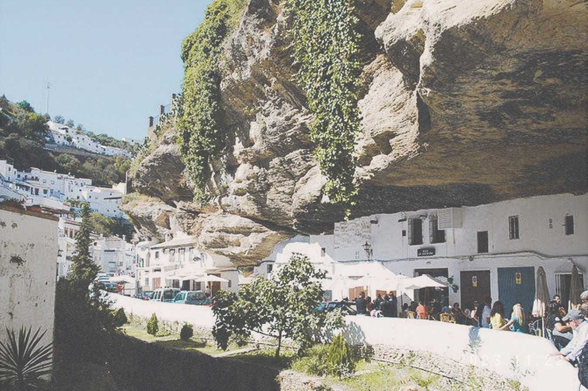

Andalucia
¡El ultramar con la ultratierra, el ultracielo!
Y el ultracielo estaba aquí
Con esta tierra, la ultratierra;
Este ultramar con este mar;
Y aquí en este ultramar, mi nombre encontró
Norte y sur, su conciencia penitente
Porque ésta lee faltaba.
Y estoy alegre allí, mi allí, complementándome,
Pues que ya tengo mi totalidad,
La plata mía aquí, en el sur, en este sur.
Setenil de las Bodegas
Cazorla